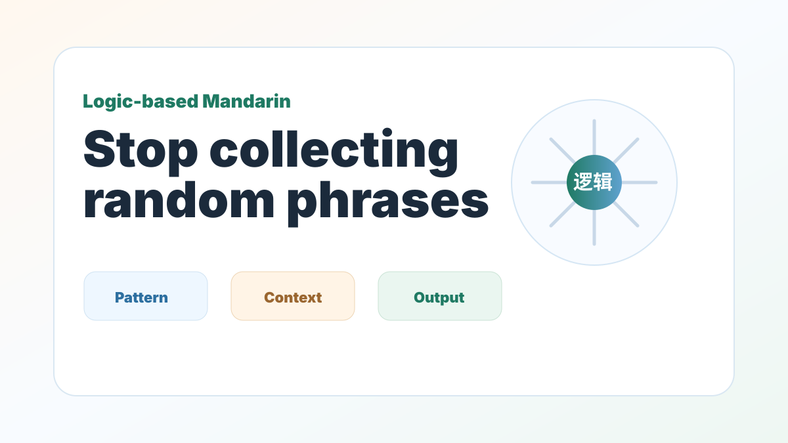

Logic-Based Mandarin
Rote Memorization Is Slowing Down Your Business Chinese Progress
For analytical adult learners, Mandarin becomes easier when it is treated as a system, not a pile of phrases.

See why memorizing isolated Mandarin phrases is inefficient for adults, and how structural logic helps you create new sentences faster.
As an international professional, your time is valuable. Yet many Mandarin programs still ask adults to learn through endless repetition, flashcards, and memorized dialogues. That can help with recognition, but it often fails when you need to speak in an unscripted meeting.
Adults usually learn better through frameworks. Chinese has patterns in word formation, sentence order, aspect, tone, and context. Once those patterns become visible, the language becomes more reusable.
Stop memorizing isolated words. Start seeing root logic.
Many Chinese words share structural components. When you understand the root logic behind a character or pattern, you can connect new words faster.
飞机 · 手机 · 计算机 · 机会
The character 机 can appear in words related to machines, devices, systems, and opportunities. The point is not to memorize one word at a time. The point is to notice how meaning is built.
Master scaffolding, not scripts
Instead of memorizing a meeting script, learn how Chinese organizes time, conditions, actions, and results. Once you understand the scaffold, you can plug in the vocabulary that fits your industry.
如果 + 条件，我们就可以 + 结果。
If + condition, then we can + result.
Why this matters in Business Chinese
Business situations change quickly. A supplier changes the price. A client asks a new question. A meeting goes off script. If you only memorized phrases, you freeze. If you understand the logic, you can build a new sentence.
The Mandrix takeaway
Mandrix teaches Chinese by decoding the structure first, then practicing real output. The goal is not to collect more phrases. The goal is to know how Chinese works well enough to create your own.
Want a Chinese learning path built around logic?
The free AI level check identifies likely sentence-pattern, pronunciation, and learning-path issues before you choose a paid program.